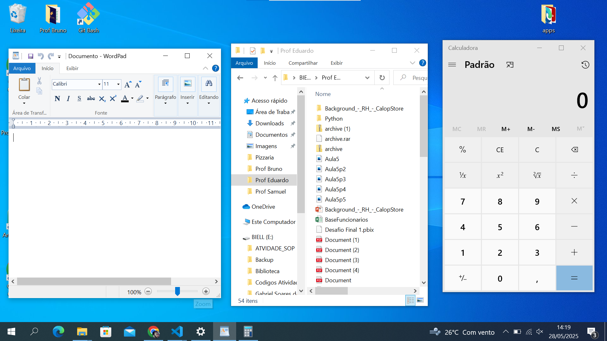
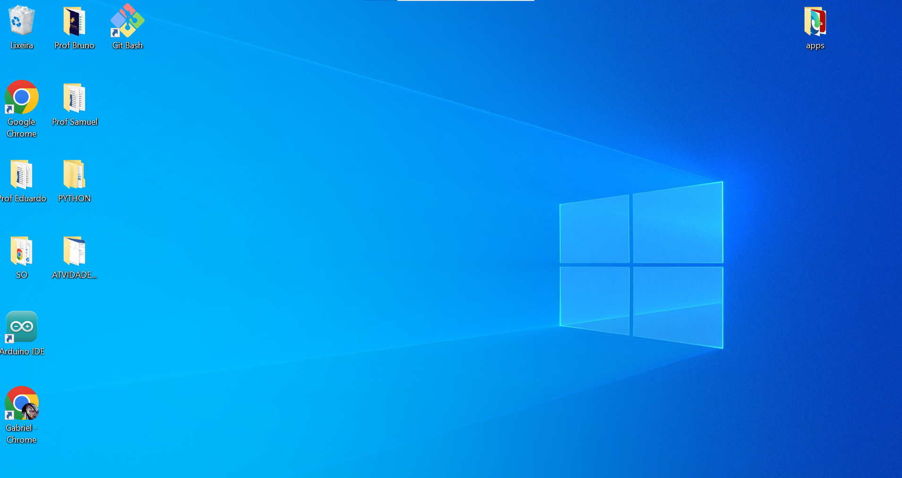
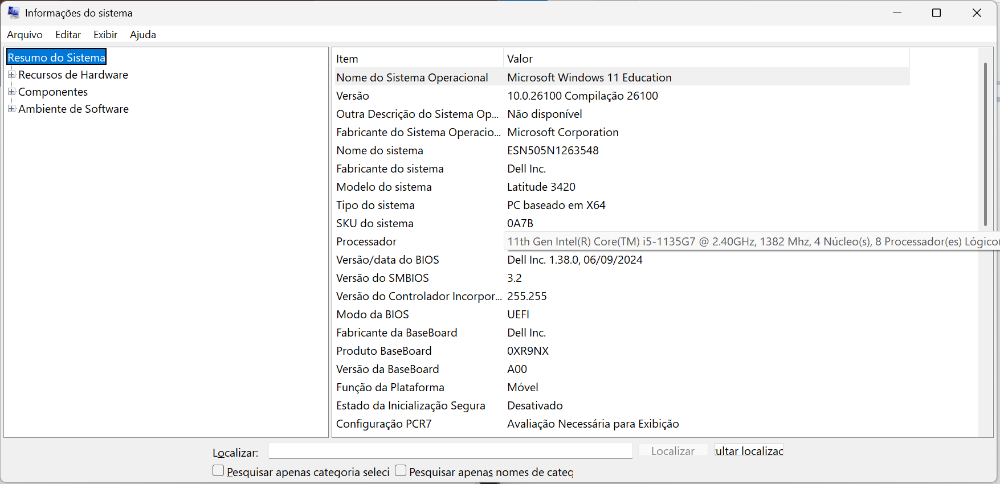
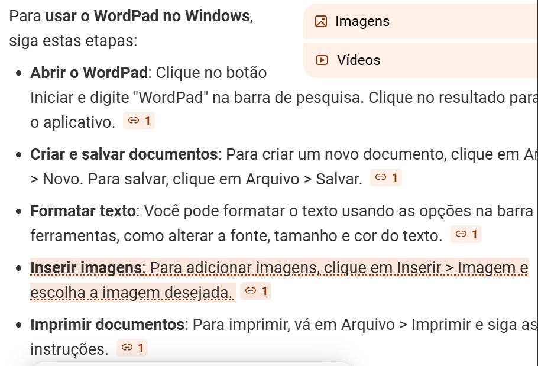
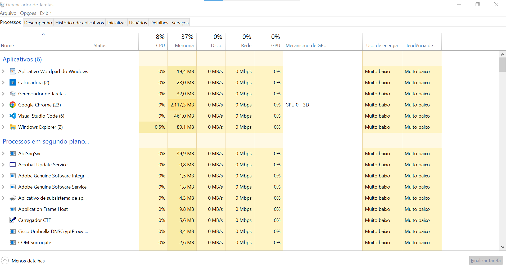
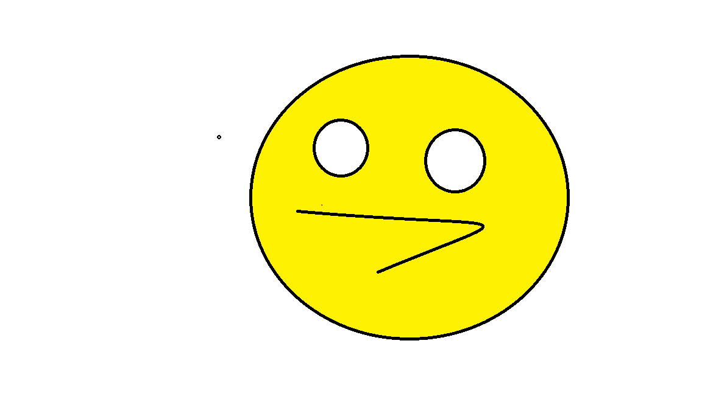

Atividades
Atividade 2


Atividade 3


Atividade 4

Atividade 5
 Atividade 6
 Atividade 7
Não possui nenhuma dificuldade em organizar as janelas.
Atividade 8

Atividade 9

Atividade 10


Atividade 11

Questão 1
Código Aberto: São códigos acessíveis, que podem ser modificados e distribuídos.
Código Fechado: São códigos que só pessoas autorizadas podem acessar e modificar.
Questão 2
Ubuntu: Personalização, escolha de programas, drivers na instalação.
Windows: Processo mais fácil e pronto, com licença e drivers automáticos na maioria.
Questão 3
Texto: Mais rápido e controlado, mas difícil de aprender. Bom para servidores.
Interface gráfica: Fácil de usar, intuitivo, ideal para tarefas simples.
Questão 4
No sistema Windows, a estrutura de diretórios é organizada de forma a separar os componentes principais do sistema e os dados dos usuários. Enquanto no Linux, a organização é diferente e segue uma lógica mais padronizada.
Questão 5
Gerenciamento: controla quem usa o sistema e quais recursos pode acessar.
Windows: usa permissões específicas por arquivo/diretório.
Linux: usa permissões para proprietário, grupo e outros, controlando leitura, escrita e execução.
Questão 6
Para ligar, verifica-se o hardware; carrega o sistema; apresenta a tela inicial. Sistemas fechados e abertos fazem basicamente o mesmo, mas com componentes específicos.
Questão 7
1. Unidades e pastas em rede: Recursos que podem ser acessados por vários computadores na rede, facilitando o compartilhamento de arquivos.
2. Compartilhamento e acesso: Compartilhamento é disponibilizar recursos, acesso é a permissão de usar esses recursos por usuários autorizados.
3. Mapeamento: Associar uma unidade de rede a uma letra do seu sistema para acesso fácil.

Questão 8
1. Segurança cibernética é o conjunto de práticas para proteger sistemas e dados contra ameaças.
2. Tipos de ameaças: vírus, malware, phishing, ransomware, ataques DDoS.
3. Vulnerabilidades são fraquezas que podem ser exploradas por atacantes.
4. Credenciais são informações de login; protegê-las previne acessos não autorizados.
5. Engenharia social: manipulação para obter informações; exemplos: phishing, ligações falsas.
Questão 9
Para aumentar a segurança: usar antivírus, atualizações constantes, backups, senhas fortes e firewalls. Um firewall do sistema monitora e controla o tráfego de rede, bloqueando acessos não autorizados.
Questão 10
Configuração de firewall e antivírus;
Controle de contas e permissões;
Configurações de rede e conexão;
Atualizações de segurança;
Otimização de desempenho (serviços, inicialização).